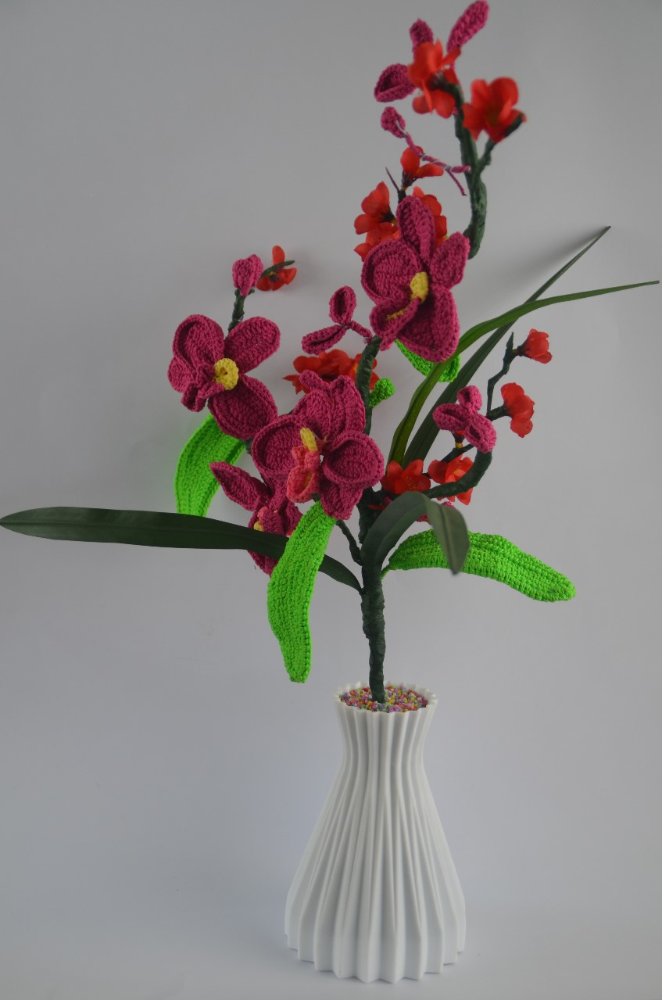

Welcome to the fine arts exhibition presented by Class 9B with the theme "Adventure of Indonesia". This exhibition is the result of our students' hard work and creativity which aims to explore the beauty and diversity of Indonesian culture.
"Adventure of Indonesia" invites visitors to explore various aspects of Indonesian life, from natural riches to unique traditions. Through works of art, we want to convey a message about the importance of preserving culture and the environment.
This exhibition displays various works of art from Class 9B students. Each work is a personal expression that describes our experiences and views about Indonesia.
We hope that this exhibition can provide inspiration and knowledge to visitors about the beauty and diversity of Indonesia.
Thank you for visiting and supporting our work!